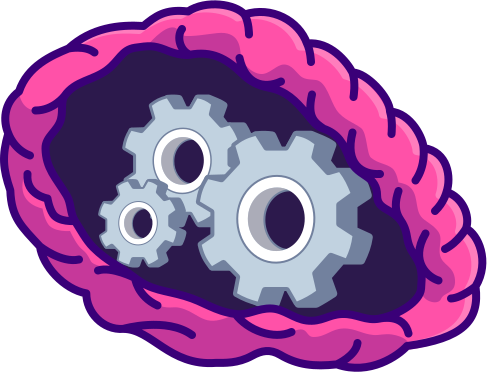

Skills
With roots in front-end development, UX design, and even a bit of game programming, I take a multidimensional approach to problem-solving — because sometimes the best solutions come from wearing all the hats at once.
{{ subtitle }}

Development
Core Frameworks & Languages
- Angular
- .NET Core MVC
- HTML, CSS, SCSS
- JavaScript, TypeScript
- C#
- React (although I'm a bit rusty)
Libraries & Tools
- RxJS
- Jasmine, Karma, Jest (testing)
- Git & version control workflows
- RESTful APIs
- Webpack, Angular CLI, NPM

Design
Figma-Driven UX/UI Design
- Wireframing, mockups, and high-fidelity prototyping
- Designing responsive, accessible layouts with clear information hierarchy
- Prototyping user flows and microinteractions
- Building scalable design systems with component libraries and design tokens
- Preparing detailed developer handoff specs
- Collaborating with developers and stakeholders throughout the process
- Iterative design driven by user feedback and real-world constraints